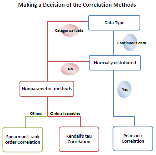

Inhalt |
Der Korrelationskoeffizient ist eine numerische Maßangabe von der Stärke der Beziehung zwischen zwei zufälligen Variablen. Der Wert des Korrelationskoeffizienten bewegt sich zwischen -1 bis 1. Ein positiver Wert bedeutet, dass die zwei betrachteten Variablen eine positive lineare Beziehung haben (d.h., die Zunahme von einer bedeutet die Zunahme der anderen). Man bezeichnet sie als positiv korreliert. Ein negativer Wert zeigt an, dass die Variablen eine negative lineare Beziehung besitzen (d.h., eine Zunahme der einen entspricht der Abnahme der anderen). Sie werden als negativ korreliert bezeichnet. Je näher der Wert bei +1 oder -1 liegt, desto stärker ist der Grad der linearen Abhängigkeit.
|
 |
Sollten Ihre Daten fehlende Werte enthalten, bietet der Dialog des Korrelationskoeffizienten die Option, Fälle paar- oder listenweise zu löschen.
Um den Dialog corrcoef im Menü zu öffnen:
|
Themen, die in diesem Abschnitt behandelt werden: |